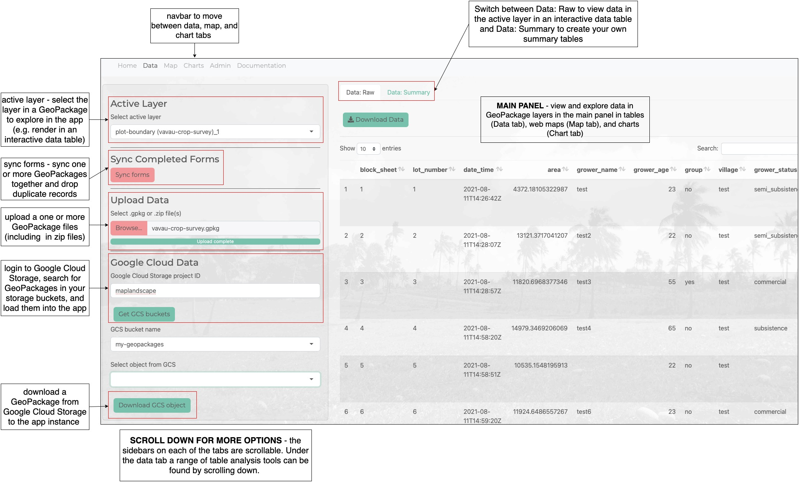

Overview
A package that provides functions for building Shiny dashboard applications to explore and visualise spatial layers in GeoPackages. In particular, it focuses on providing browser-based tools for analysing data stored in QFieldCloud.
A pre-built Shiny application is provided with this package which uses these functions and provides tools for:
- Syncing data stored in multiple GeoPackages.
- Exploring GeoPackage layers in interactive tables, web maps, and charts.
- Customising and styling charts and web maps.
- Combining layers using spatial and non-spatial joins.
- Generating summary tables through group-by and summarise operations.
- Generating new layers and add new columns to existing layers.
- Authenticated access to GeoPackages stored in QFieldCloud and Google Cloud Storage.
This package was developed as part of the Livelihoods and Landscapes project which is developing tools and approaches to map diverse agricultural landscapes. The initial motivation for developing the package and Shiny application was to provide analysts with tools to analyse and visualise geospatial data collected ‘in the field’ using the QField mobile GIS application.
Use
The vignettes provide a range of tutorials for exploring and analysing data in GeoPackages using the maplandscape app. These include tutorials demonstrating how to perform a range of table analysis operations (add columns, filter rows, join tables), spatial analysis operations (spatial join - combine spatial layers), style your own web maps, and create a range of charts to visualise data in your GeoPackages.
The figure below provides an overview of the UI for the maplandscape app provided with this package. Each of the main tabs in the app have a similar layout with a scrollable sidebar containing options for loading GeoPackages into the app, selecting a layer in a GeoPackage, querying and analysing GeoPackage data, and styling charts and web maps. The data in GeoPackage layers is rendered in the main panel of the page in either table, web map, or chart formats.

Local R Package
Install as an R package:
install.packages("devtools")
devtools::install_github("livelihoods-and-landscapes/maplandscape")Build and customise your own Shiny application using functions provided by maplandscape or launch a pre-built application:
dir <- system.file("app", package = "maplandscape")
setwd(dir)
library(maplandscape)
shiny::shinyAppDir(".")To build the package:
devtools::check()
# update NAMESPACE file for exports
devtools::document()The will launch a pre-built Shiny application to explore data in GeoPackages from the inst/app sub-directory of the package.
shinyapps.io
RStudio offers a free-tier hosting service for Shiny apps. Sign up at shinyapps.io.
Follow the above commands to launch maplandscape (or your custom Shiny application). In the top-right of the application window you will see a Publish button, click this button and follow the prompts to deploy the application to shinyapps.io.

RStudio provide a detailed tutorial for deploying apps to shinyapps.io here.
Docker and host in the cloud
This requires installing git and docker. Clone the maplandscape GitHub repo:
git clone https://github.com/livelihoods-and-landscapes/maplandscape.git
cd maplandscapeDocker and Shiny Server
There is a sub-directory named docker-shiny-server. This contains a Dockerfile that lists instructions that are used to build a docker image.
cd /inst/docker-shiny-server
docker build -t maplandscape ShinyServer.DockerfileThe image is based on the rocker/shiny:latest image which includes Shiny Server to host the maplandscape Shiny application. Shiny Server serves apps out of the srv/shiny-server/ directory; building the docker image will install all the R packages required to run maplandscape, install the maplandscape package from github, and copy an app.R script into srv/shiny-server/app which contains the commands to launch maplandscape.
A customised shiny-customised.config file is used to set the app_dir to the app directory where Shiny Server will launch and serve the app from.
Launch the docker container:
docker run -p 3838:3838 maplandscapeYou can find more information about Shiny Server here, at its GitHub repo, and following this tutorial.
Please see the vignette Deploy: Google Cloud for a tutorial demonstrating how to deploy a containerised Shiny application on Google Cloud Run.
Docker
To deploy as a containerised Shiny application without Shiny Server (e.g. if deploying using Shiny Proxy) use the Dockerfile in the /inst/ directory. This Dockerfile is based of a generic maplandscape-base image which is pre-built on top of Ubuntu 20.04 LTS and the rocker r-ver 4.1.2 image. It contains the system libraries and main R package dependencies used to build maplandscape.
docker build -t maplandscape .And to run:
docker run -p 3838:3838 maplandscape